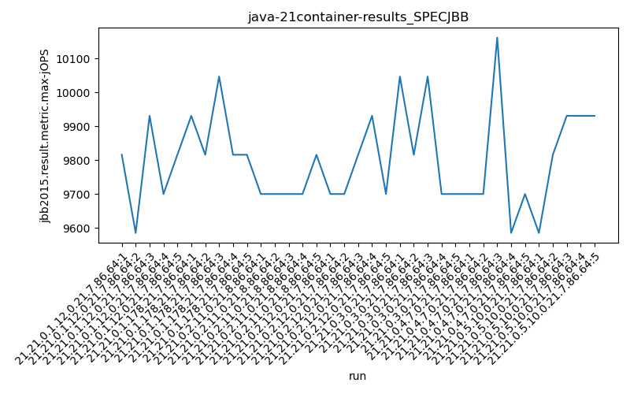
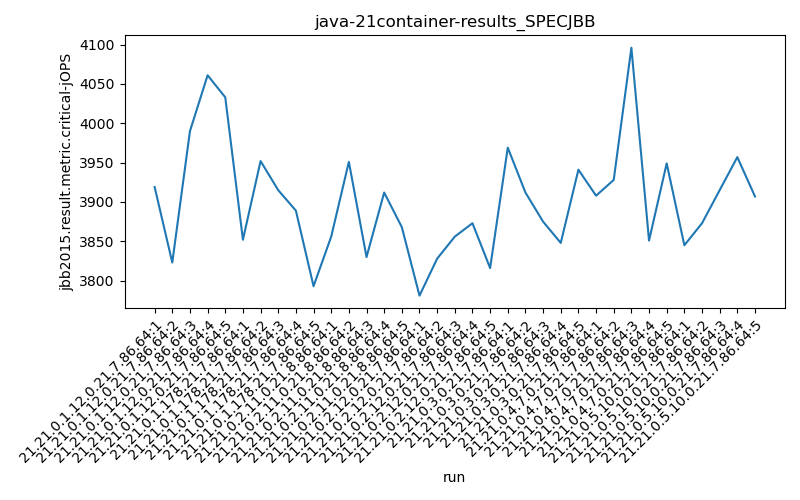
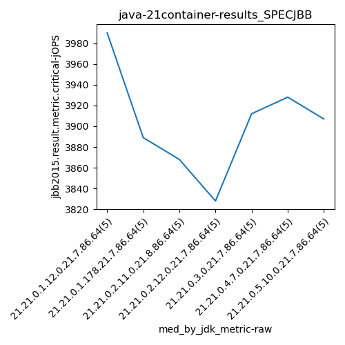

java-21 SPECJBB
Context at bottom
/home/jvanek/git/benchmarks-in-nested-virtualisation-toolchain/final_results/container_results/container-results_J2DBENCH
java-21
SPECJBB
/home/jvanek/git/benchmarks-in-nested-virtualisation-toolchain/final_results/container_results/container-results_RADARGUNs3
java-21
SPECJBB
/home/jvanek/git/benchmarks-in-nested-virtualisation-toolchain/final_results/container_results/container-results_RADARGUNs1
java-21
SPECJBB
/home/jvanek/git/benchmarks-in-nested-virtualisation-toolchain/final_results/container_results/container-results_DACAPO
java-21
SPECJBB
/home/jvanek/git/benchmarks-in-nested-virtualisation-toolchain/final_results/container_results/container-results_SPECJBB
java-21
SPECJBB
container-results_SPECJBB
- container-results_SPECJBB - max-jops
- container-results_SPECJBB - critical jops
container-results_SPECJBB - max-jops
Expected number of java-21 JDKs: 7
1st avgmed_alljdks_metric:
/home/jvanek/git/benchmarks-in-nested-virtualisation-toolchain/final_results/result_processing.py /home/jvanek/git/benchmarks-in-nested-virtualisation-toolchain/final_results/container_results/container-results_SPECJBB jbb2015.result.metric.max-jOPS False
values: [9816, 9585, 9931, 9700, 9816, 9931, 9816, 10047, 9816, 9816, 9700, 9700, 9700, 9700, 9816, 9700, 9700, 9816, 9931, 9700, 10047, 9816, 10047, 9700, 9700, 9700, 9700, 10162, 9585, 9700, 9585, 9816, 9931, 9931, 9931]

Expected number of iterations: 5
final number of values: 35 out of 35
Pass rate: 100.0%
values: (9585, 10162, 9802.514285714286, 9816)

** accuracy from all jdks and runs
more is better
MIN: 9585
MAX: 10162
AVG: 9802.514285714286
MED: 9816
Relative differences 1:
MIN-MAX: 6.0 %
MIN-AVG: 2.0 %
MIN-MED: 2.0 %
MAX-MIN: -6.0 %
MAX-AVG: -4.0 %
MAX-MED: -4.0 %
AVG-MED: 0.0 %
stored to java-21.properties. sort | uniq that!
2nd avgmed_by_jdk_metric:
values: [9769.6, 9885.2, 9723.2, 9769.4, 9862.0, 9769.4, 9838.8]

values: [9816, 9816, 9700, 9700, 9816, 9700, 9931]

values: (9723.2, 9885.2, 9802.514285714287, 9769.6)
values: (9700, 9931, 9782.714285714286, 9816)

** accuracy from all jdks where runs were avged
more is better
MIN: 9723.2
MAX: 9885.2
AVG: 9802.514285714287
MED: 9769.6
Relative differences 1:
MIN-MAX: 2.0 %
MIN-AVG: 1.0 %
MIN-MED: 0.0 %
MAX-MIN: -2.0 %
MAX-AVG: -1.0 %
MAX-MED: -1.0 %
AVG-MED: -0.0 %
stored to java-21.properties. sort | uniq that!
** accuracy from all jdks where runs were medianed
more is better
MIN: 9700
MAX: 9931
AVG: 9782.714285714286
MED: 9816
Relative differences 1:
MIN-MAX: 2.0 %
MIN-AVG: 1.0 %
MIN-MED: 1.0 %
MAX-MIN: -2.0 %
MAX-AVG: -2.0 %
MAX-MED: -1.0 %
AVG-MED: 0.0 %
stored to java-21.properties. sort | uniq that!
container-results_SPECJBB - critical jops
Expected number of java-21 JDKs: 7
1st avgmed_alljdks_metric:
/home/jvanek/git/benchmarks-in-nested-virtualisation-toolchain/final_results/result_processing.py /home/jvanek/git/benchmarks-in-nested-virtualisation-toolchain/final_results/container_results/container-results_SPECJBB jbb2015.result.metric.critical-jOPS False
values: [3919, 3823, 3990, 4061, 4033, 3852, 3952, 3915, 3889, 3793, 3856, 3951, 3830, 3912, 3868, 3781, 3828, 3856, 3873, 3816, 3969, 3912, 3875, 3848, 3941, 3908, 3928, 4096, 3851, 3949, 3845, 3873, 3915, 3957, 3907]

Expected number of iterations: 5
final number of values: 35 out of 35
Pass rate: 100.0%
values: (3781, 4096, 3902.057142857143, 3907)

** accuracy from all jdks and runs
more is better
MIN: 3781
MAX: 4096
AVG: 3902.057142857143
MED: 3907
Relative differences 1:
MIN-MAX: 8.0 %
MIN-AVG: 3.0 %
MIN-MED: 3.0 %
MAX-MIN: -8.0 %
MAX-AVG: -5.0 %
MAX-MED: -5.0 %
AVG-MED: 0.0 %
stored to java-21.properties. sort | uniq that!
2nd avgmed_by_jdk_metric:
values: [3965.2, 3880.2, 3883.4, 3830.8, 3909.0, 3946.4, 3899.4]

values: [3990, 3889, 3868, 3828, 3912, 3928, 3907]

values: (3830.8, 3965.2, 3902.057142857143, 3899.4)
values: (3828, 3990, 3903.1428571428573, 3907)

** accuracy from all jdks where runs were avged
more is better
MIN: 3830.8
MAX: 3965.2
AVG: 3902.057142857143
MED: 3899.4
Relative differences 1:
MIN-MAX: 3.0 %
MIN-AVG: 2.0 %
MIN-MED: 2.0 %
MAX-MIN: -4.0 %
MAX-AVG: -2.0 %
MAX-MED: -2.0 %
AVG-MED: -0.0 %
stored to java-21.properties. sort | uniq that!
** accuracy from all jdks where runs were medianed
more is better
MIN: 3828
MAX: 3990
AVG: 3903.1428571428573
MED: 3907
Relative differences 1:
MIN-MAX: 4.0 %
MIN-AVG: 2.0 %
MIN-MED: 2.0 %
MAX-MIN: -4.0 %
MAX-AVG: -2.0 %
MAX-MED: -2.0 %
AVG-MED: 0.0 %
stored to java-21.properties. sort | uniq that!
/home/jvanek/git/benchmarks-in-nested-virtualisation-toolchain/final_results/container_results/container-results_JMH
java-21
SPECJBB
pass rates:
container-results_SPECJBB=100.0%
Context:
- container_results
- SPECJBB